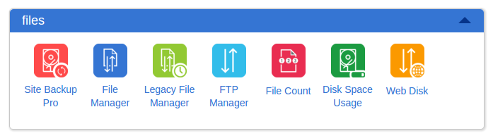
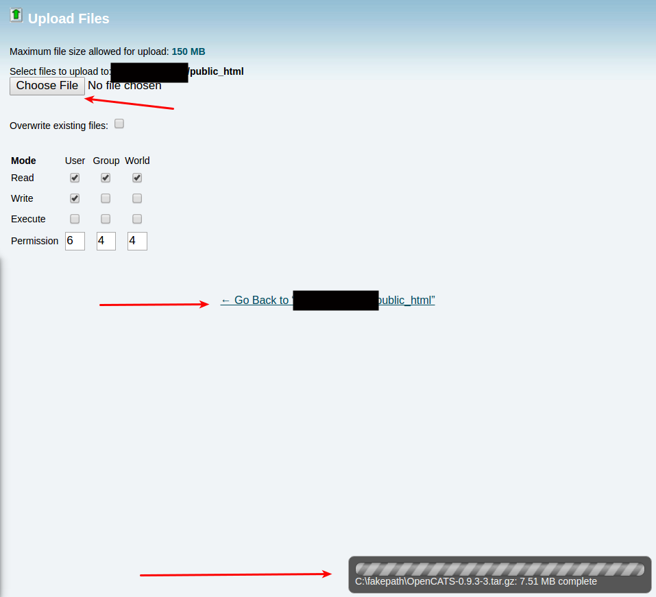
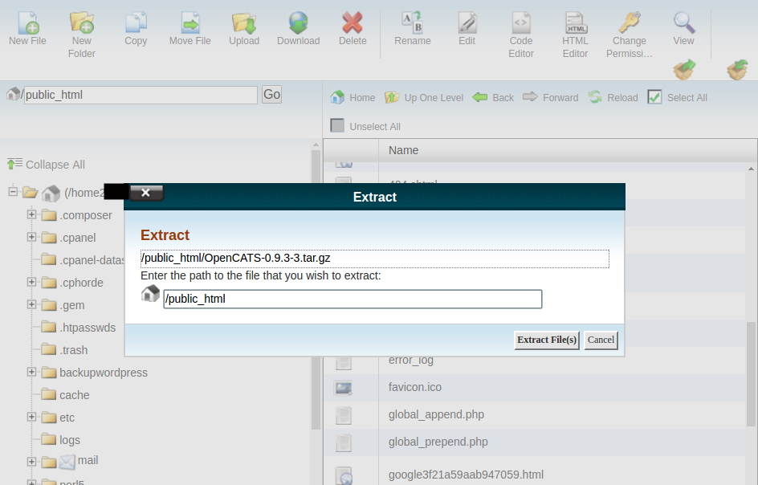
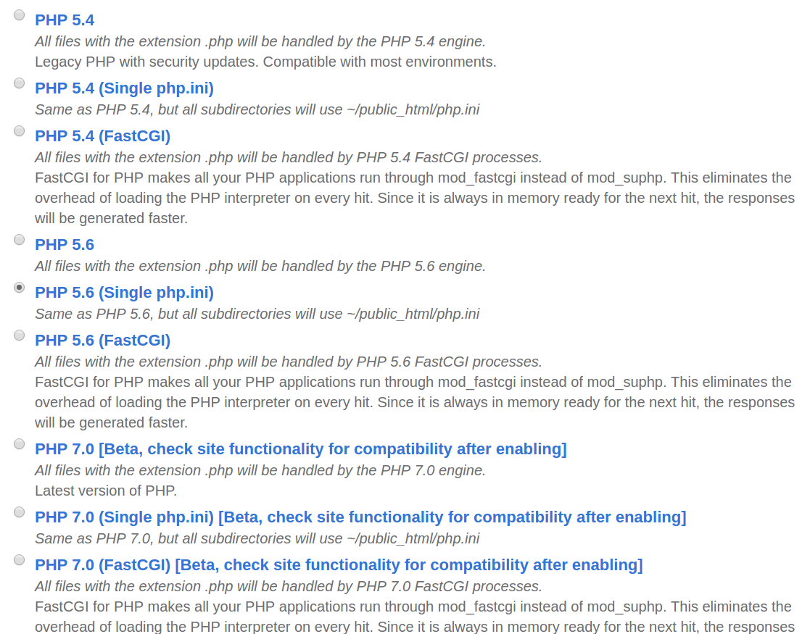

Install on Shared-hosting (Bluehost, GoDaddy or similar)¶
You can install OpenCATS right to your shared hosting account! This way OpenCATS will be web accessible from any computer and multiple users, without the hassle of setting up and running a server.
These instructions will walk you through setting up OpenCATS on a Bluehost hosting account. Major web-hosts should be a similar process, though you may have to search and make small tweaks.
Note
There are benefits and down-sides to running your OpenCATS system through a shared hosting account. The main benefit is that OpenCATS will be web accessible to any user from any location, and not limited to your local machine. You will however lose the resume-indexing tools with a shared-hosting environment. Which means that resumes will NOT be keyword searchable.
Download OpenCATS to your computer¶
Click this link to download the OpenCATS files, we will need them later:
CPanel-File Manager¶
Note
All images use Bluehost for an example. If you have a different hosting provider, this will likely look a little different.
Log in to your shared hosting account and click CPanel
Scroll down to the “files” section and click “File Manager”.
It will open up a new tab in your browser.

Double click on your main web directory (mine is listed as public _html)

Now we need to upload the OpenCATS tar file that we downloaded into this directory
Click Upload
This should bring you to a file upload screen.
- Click
Choose File - Find the
0.9.3-3.tar.gzfile that we downloaded and select it.
Note
Make sure you wait for the upload to complete before going back into the public _html folder
- When the upload is finished, click the
Go Back to public _html - Scroll down to the
0.9.3-3.tar.gzwe just uploaded and click it once to highlight it. - Click on
Extractat the top to extract the OpenCATS files from the Tar file.

This should open a new screen:
The default address should be fine, click Extract File(s)
Now you should see the extracted folder OpenCATS-0.9.3-3 listed in your public _html directory.

Note
If you want to rename the folder, that’s ok. The folder name will be part of the web address you use to access your OpenCATS Installation.
- Double click on the OpenCATS directory and check for any files named INSTALL_BLOCK. If there is one there, delete it. This file will prevent OpenCATS from installing on your system.
CPanel-PHP¶
- Return to the main CPanel screen.
Warning
Changing PHP versions on hosting accounts MAY affect web sites or programs that are already installed. You should back up any critical websites or programs BEFORE switching PHP versions.
- Scroll down to the Programming section and click on “PHP Config”.

This will open a screen to select what version of PHP your hosting is running. OpenCATS should have PHP 5.6. Select whatever PHP 5.6 option you prefer, I usually have the single ini option selected.
- Scroll down and click
save changes, then go back to the main CPanel dashboard.
CPanel-MySQL¶
Note
You will need the MySQL database name, user name and password later. Make sure you write it down as you create them.
- Scroll down to the Database Tools section and click
MYSQL Wizard.

- Type in a MySQL database name (whatever you want, for this I am doing “octest2”).
- Click next step.

- Enter a database username (whatever you want, for this I am doing “octest2”).
- Enter a password. For shared hosting, it should be a strong password.
- Click
Create user.

- Check
All privileges. - Click
Next step.
Note
Some hosting services will add account specific things to MySQL usernames and database names. Note the red box in the image below. THESE will be the user names and database names we enter into our OpenCATS system.

- Go back to the main CPanel dashboard screen.
CPanel-SSH¶
- From the main CPanel screen, scroll down to the “security” section.
- Click ssh/shell access, this will open a new browser tab.
- Below that, you will see your SSH login information. Write that down, you’ll need the hostname, username and password.

- Make sure SSH Access is enabled. If it isn’t, click the “Manage SSH Access” and enable it.
Note
The password for ssh access will be your main shared-hosting account password (GoDaddy, Bluehost, etc.).
Install Composer and dependencies¶
- Open a new browser tab and download a SSH client. Putty works fine. For Windows, download Putty Here
- For Ubuntu it can be a simple
$ sudo apt-get install putty - Open up Putty.
- Enter your hostname in the box towards the top and select SSH.
- Then click open.

- Enter your login name (username). Hit enter.

It will likely ask you to accept a key. Type “yes” to accept that.
- Enter your account password, hit enter.
Now you should just see a black screen with a #. That means you are logged in to your shared hosting account through SSH!
Note
If you renamed the OpenCATS directory, make sure to replace OpenCATS-0.9.3-3 in these commands with whatever your OpenCATS directory is named.
Note
These commands are specific to Bluehost. The directory structure for other hosts may be different.
Type the following commands and hit enter after each one.
# cd /www/OpenCATS-0.9.3-3# curl -sS https://getcomposer.org/installer | php# php composer.phar install# exit
If composer installed correctly, and it installed all the dependencies correctly you should see some scrolling text. If you see red errors, you’ll need to let us know on the OpenCATS forums.
Warning
Make sure when you are done, to go back through CPanel and DISABLE the SSH access. There is no reason to leave that enabled.
Warning
Seriously....disable your SSH when you are done. You really don’t want to leave that open.
Install the OpenCATS software¶
In your browser, go to yourdomainname.com/OpenCATS-0.9.3-3 (if you changed the main directory name, replace OpenCATS-0.9.3-3 with the new name).
Note
If you have already attempted to install OpenCATS and the installer doesn’t load, check to see if there is a file called ‘INSTALL_BLOCK’ in the OpenCATS directory. Delete it to allow the installer to run.
Click: Installation Wizard

Step 1: System Connectivity
This step makes sure you have the required server environment set up correctly.
Note
Green = good.
Note
Yellow = OpenCATS will work, but some functions may not. Common yellow errors on shared hosting are for LDAP and SOAP extensions. These extensions are not necessary and you do not lose any functionality.
Warning
Red = Bad You can’t continue the installation until a server environment issue is fixed.
If you see all green and/or yellow, click Next

Step 2: Database connectivity
Enter your OpenCATS MySQL/MariaDB database name, MySQL/MariaDB database username, MySQL/MariaDB database password, and MySQL/MariaDB database host address in these boxes.
Note
If you are running OpenCATS locally on your computer, or on some shared hosts, the host address will be localhost. If your server, VPS (some shared hosting too), you will need to enter the specific address to access.
Click Test Database Connectivity
Note
I usually get red the first few tries after click the test database connectivity button. If you try more than a couple times and it stays red, you have either entered your MySQL/Mariadb information incorrectly, or you have set your MySQL/MariaDB database up incorrectly. It needs to be corrected before proceeding.

Step 3: Loading Data
For a new installation, select New Installation, then next
Note
Demonstration Installation will auto-populate OpenCATS with general example clients, candidates, job orders, etc. There’s no reason to use this in my opinion.
Note
Restore installation from backup will be covered in a future tutorial

Step 4 Setup resume indexing
For a shared hosting environment, you can not use the resume indexing tools. You need root access to install these programs and most shared hosts do not allow that. Occasionally, with a smaller hosting company, you can contact them and request the programs be installed and they will do that.
- Click
Skip this step

Step 5 Mail Settings
OpenCATS can send emails. If you don’t want to use it, you don’t have to. OpenCATS works great either way!
If you do not know what your settings are, or don’t want the mail functionality in OpenCATS, click the drop-down bar and select None.
Choose an option from the Mail Support drop-down bar, fill the necessary information in (if you are using it) and click Next

Step 6 Loading extras
Don’t forget to set the time zone to your area!
Warning
If you forget to set the time zone ALL of the timestamps on every note in OpenCATS will be wrong. Set the time zone correctly. You will thank us...
Choose the date format you like best
(United States only) choose to install (if you want) zip code lookup
Click next

Step 7 Finishing installation
Runs through the installation process. You should see a box and some pretty bars moving. It shouldn’t take long.
Note
The default username and password are: admin/admin (all lowercase)
Click Start OpenCATS for your login screen.

Success!!
Your brand new OpenCATS applicant System!

Warning
Now you have a shiny, new Applicant tracking system...change your admin password...RIGHT...NOW. Click Settings then change password. Do...it...right...now.